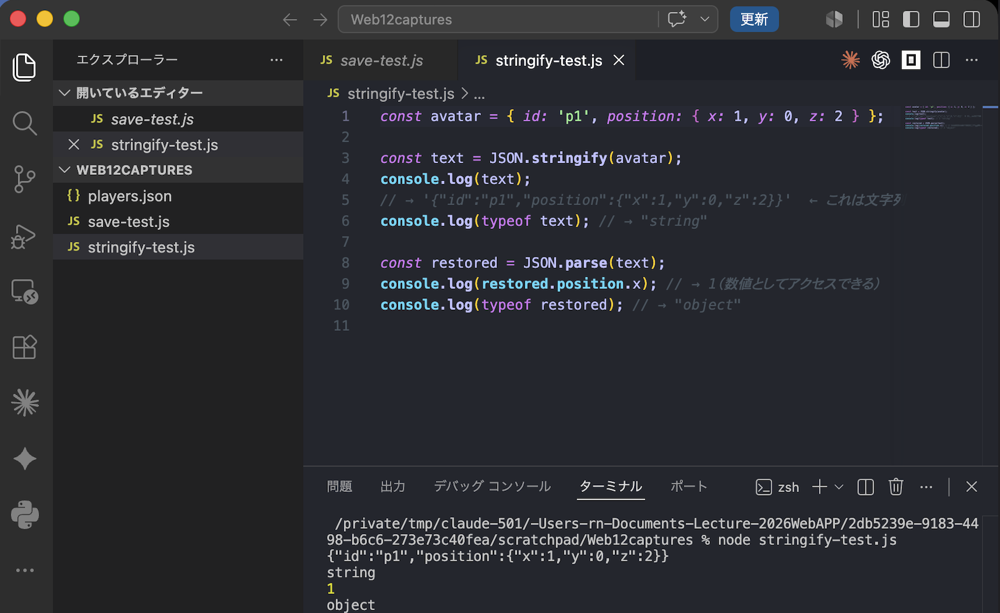
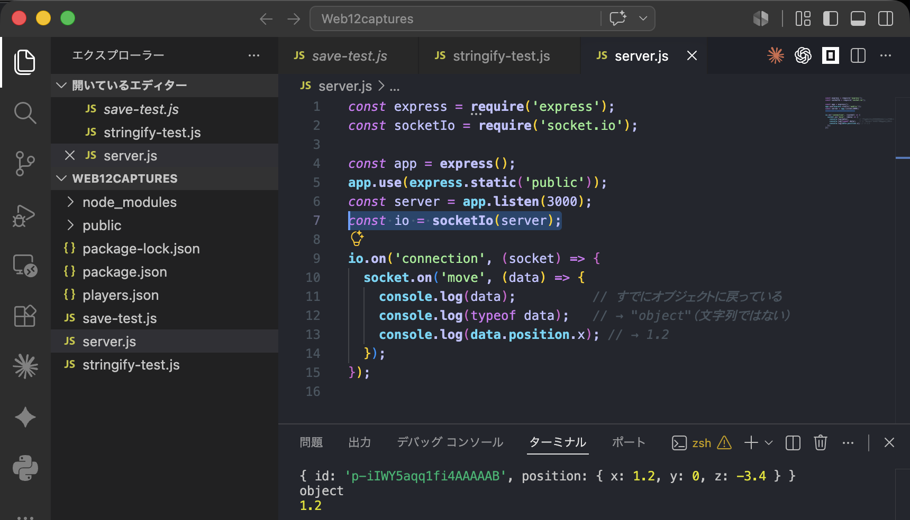
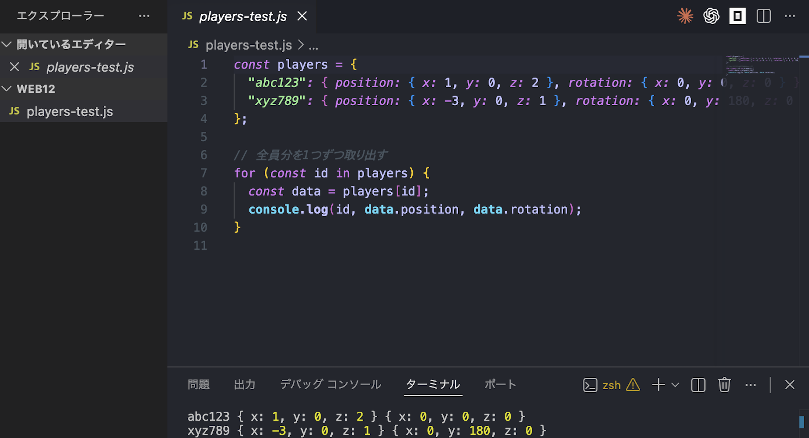
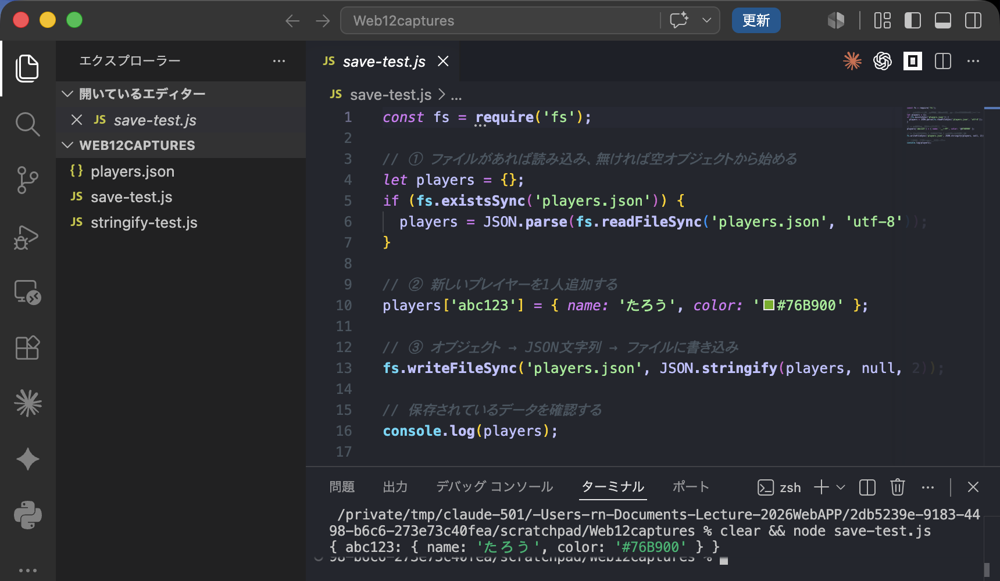
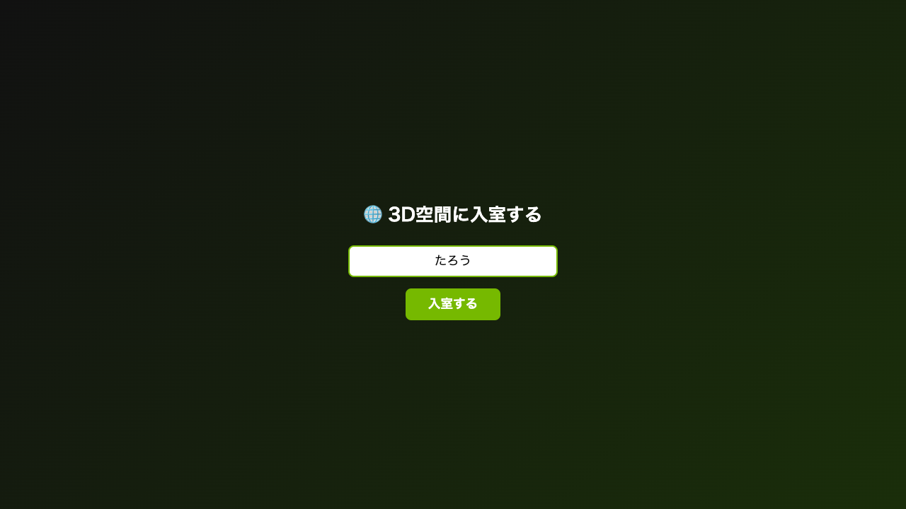
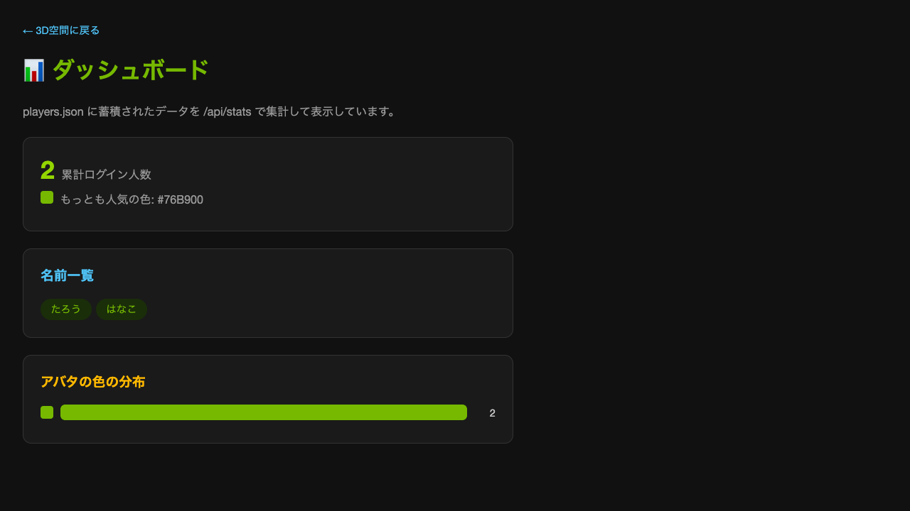
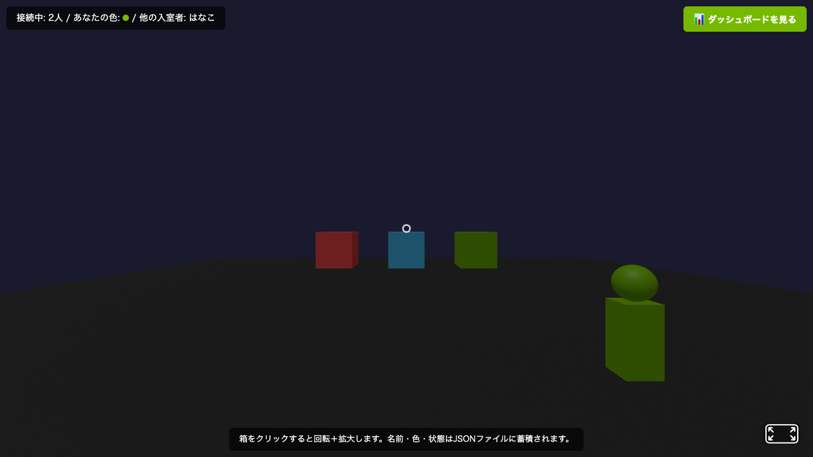
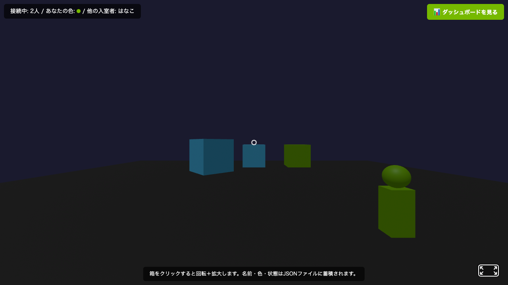
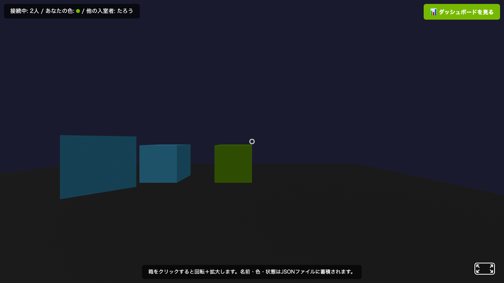
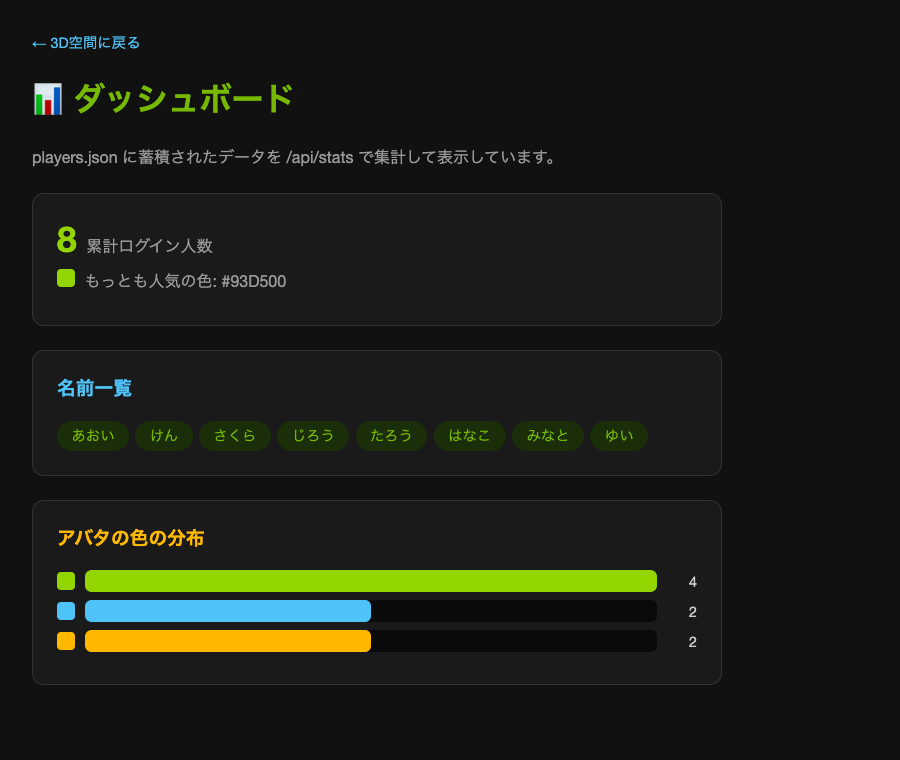

アバタのデータ（position・rotation・id）をJSON形式で理解する
第10回・第11回で、アバタのposition（位置）・rotation（回転）・id（識別子）をSocket.IOでサーバとやり取りしてきました。
今回は、そのデータをJSON（JavaScript Object Notation）という共通の形式で整理し、サーバに蓄積し、最後にそれを分析する「ダッシュボード」を作る、という流れで進めます。
この回では説明の途中にも実際に手を動かして試すコードが出てきます。まず、コードを保存する場所を用意しましょう。
S:\Web_Prog の中に Web12 フォルダを作成するS:\Web_Prog\Web12 を開くこの後の説明で ○○.js というコードが出てきたら、VS Codeで「ファイル」→「新規テキストファイル」を作り、コードをコピー＆ペーストして同じファイル名で保存し、ターミナルで node ○○.js と入力して実行します（保存し忘れると古い内容のまま実行されるので注意）。.html のコードは public フォルダの中に保存します。
第10回では、自分の位置や回転が変わるたびに、次のようなオブジェクトをサーバに送信していました。これは第10回ですでに作成済みのコードです。今回あらためて作る必要はありません――内容を思い出すための振り返りとして載せています。
JavaScript ── public/app.js（第10回で作成済み・振り返り用） const socket = io(); // 0.1秒ごとに、自分の位置と回転をサーバへ送信する setInterval(() => { socket.emit('move', { id: socket.id, position: { x: 1.2, y: 0, z: -3.4 }, rotation: { x: 0, y: 90, z: 0 } }); }, 100);
この { id, position, rotation } という形――キーと値の組み合わせ――こそが、これから学ぶJSONの基本形です。今回は「なぜこの形で送るのか」「サーバとブラウザの間で何が起きているのか」を掘り下げます。
読み方:
JSON = ジェイソン（JavaScript Object Notation の略）。
JSON は、JavaScriptのオブジェクトの書き方をもとにした、データをテキスト（文字列）として表す共通フォーマットです。プログラミング言語を問わず読み書きできるため、ブラウザとサーバのようにJavaScript同士の通信でも、Pythonなど別言語のサーバとやり取りする場合でも使えます。
| ルール | 説明 | 例 |
|---|---|---|
| キーは二重引用符 | キー名は必ず "（ダブルクォート）で囲む。シングルクォートや無しは不可 | {"id": "abc"} |
| 値の型は限定 | 文字列・数値・真偽値・null・配列・オブジェクトのみ | {"score": 10, "on": true} |
| ネスト可能 | オブジェクトや配列を値として入れ子にできる | {"position": {"x": 1, "y": 0}} |
| 関数は書けない | JSONに関数・undefined・日時オブジェクトはそのまま入れられない | — |
JSのオブジェクトリテラル と JSON の違い
| JavaScriptのオブジェクト | JSON（テキスト） | |
|---|---|---|
| キーの引用符 | 省略できる: {id: 'a'} | 必須: {"id": "a"} |
| 文字列の引用符 | ' でも " でもよい | " のみ |
| 実体 | メモリ上のオブジェクト（値） | ただの文字列（テキスト） |
| 関数・undefined | 持てる | 持てない |
JSONは「テキストとして書かれたJavaScriptのオブジェクトのようなもの」と捉えると理解しやすいです。
ネットワーク越しにデータを送るとき、実際に流れているのはテキスト（文字列）です。JavaScriptのオブジェクトをそのまま送ることはできないため、一度テキストに変換する必要があります。
| 関数 | 意味 | 変換の向き |
|---|---|---|
JSON.stringify(obj) | オブジェクト → JSON文字列 | 送信前 |
JSON.parse(text) | JSON文字列 → オブジェクト | 受信後 |
JavaScript ── stringify-test.js const avatar = { id: 'p1', position: { x: 1, y: 0, z: 2 } }; const text = JSON.stringify(avatar); console.log(text); // → '{"id":"p1","position":{"x":1,"y":0,"z":2}}' ← これは文字列 console.log(typeof text); // → "string" const restored = JSON.parse(text); console.log(restored.position.x); // → 1（数値としてアクセスできる） console.log(typeof restored); // → "object"
実際に試してみましょう。準備で開いた Web12 フォルダに stringify-test.js という名前で上のコードを保存し、ターミナルで node stringify-test.js を実行すると、コメントに書いた通りの結果がターミナルに表示されます。

typeof text・restored.position.x・typeof restored の4行が、コードのコメント通りに表示されている。やってみよう（1分）
上のコードで avatar に greet: function(){} というプロパティを追加してから JSON.stringify したら、結果の文字列はどうなるか予測してみよう。
これまで socket.emit('move', {position, rotation}) のように、オブジェクトをそのまま渡してきました。実はSocket.IOが内部で自動的に JSON.stringify ／ JSON.parse を行っているため、私たちは意識せずに使えていたのです。
JavaScript ── public/app.js（送信側 = クライアント） const socket = io(); socket.emit('move', { id: socket.id, position: { x: 1.2, y: 0, z: -3.4 } }); // Socket.IOが裏でJSON.stringifyして送信している
JavaScript ── server.js（受信側 = サーバ） const express = require('express'); const socketIo = require('socket.io'); const app = express(); const server = app.listen(3000); const io = socketIo(server); io.on('connection', (socket) => { socket.on('move', (data) => { console.log(data); // すでにオブジェクトに戻っている console.log(typeof data); // → "object"（文字列ではない） console.log(data.position.x); // → 1.2 }); });
このコードは今は作成・実行しません。クライアントとサーバの両方が必要な例なので、ここでは「送信側と受信側で何が起きているか」の理解が目的です。同じ仕組みは1.7のログイン機能で実際に動かします。

node server.js でサーバを起動し、ブラウザから socket.emit('move', ...) を送信した結果。受信した data がすでにオブジェクトに戻っていること（typeof data → "object"）、data.position.x が 1.2 として取り出せることが確認できる。なぜこれを知っておく必要があるのか
function や undefined を含むオブジェクトを送ろうとすると、その部分が消えて届くことが理解できるconsole.log したときに何が起きているか説明できるようになるサーバは複数人分のアバタ情報を管理する必要があります。JSONはネスト（入れ子）できるため、id をキーにして全員分をひとつのオブジェクトにまとめられます。
JavaScript const players = { "abc123": { position: { x: 1, y: 0, z: 2 }, rotation: { x: 0, y: 0, z: 0 } }, "xyz789": { position: { x: -3, y: 0, z: 1 }, rotation: { x: 0, y: 180, z: 0 } } }; // 全員分を1つずつ取り出す for (const id in players) { const data = players[id]; console.log(id, data.position, data.rotation); }
これも実際に試してみましょう。Web12 フォルダに players-test.js という名前で保存し、VS Codeのターミナルで node players-test.js を実行すると、2人分の id・position・rotation がターミナルに表示されます。

abc123・xyz789 それぞれの position・rotation が1行ずつ表示されている。players は名札をid順に並べたロッカーのようなものです。ロッカー番号（id）が分かれば、誰の名札にもすぐアクセスできます。
このように複数人分のデータを1つのJSONオブジェクトにまとめて送ることで、サーバは io.emit('players', players) のように一度の送信で全員分の最新状態を配信できます。
これまでは JSON.stringify した文字列をSocket.IOで送るだけでした。同じ文字列をファイルに書き込むことができれば、サーバを再起動してもデータが残ります。Node.jsの fs（file system）モジュールを使います。
JavaScript ── save-test.js const fs = require('fs'); // ① ファイルがあれば読み込み、無ければ空オブジェクトから始める let players = {}; if (fs.existsSync('players.json')) { players = JSON.parse(fs.readFileSync('players.json', 'utf-8')); } // ② 新しいプレイヤーを1人追加する players['abc123'] = { name: 'たろう', color: '#76B900' }; // ③ オブジェクト → JSON文字列 → ファイルに書き込み fs.writeFileSync('players.json', JSON.stringify(players, null, 2)); // 保存されているデータを確認する console.log(players);
① の existsSync チェックが無いと、実行するたびに前回のデータが消えて players が空から始まってしまいます（fs.readFileSync はファイルが無いとエラーで停止する点にも注意）。
このコードは今は作成・実行しません。ここではコードの意味（読み込み→追加→書き込みの流れ）を理解してください。同じ書き込み方法を1.7のログイン処理でそのまま使います。

players.json に書き込んだのと同じ内容が console.log(players) でも表示される。| 関数 | 意味 |
|---|---|
fs.writeFileSync(path, text) | 文字列 text をファイル path に書き込む（同期的） |
fs.readFileSync(path, 'utf-8') | ファイル path を文字列として読み込む |
fs.existsSync(path) | ファイルが存在するか確認する（初回起動時はまだファイルが無いため） |
JSON.stringify は「メモの内容を紙に書き写す」作業、fs.writeFileSync は「その紙をファイルキャビネットにしまう」作業です。しまっておけば、部屋の電気を消しても（サーバを再起動しても）紙は残っています。
3D空間に入る前に、名前を入力する画面を用意します。入力された名前はサーバに送られ、アバタのデータ（id, name, position, rotation, color）の一部としてJSON形式で扱われます。

login-screen と main-scene の display を切り替えているだけのシンプルな仕組み。以下は public/login.html（クライアント）と server.js（サーバ）の完成コードです。そのままコピペして動かせます。
HTML ── public/login.html <!DOCTYPE html> <html lang="ja"> <head> <meta charset="UTF-8"> <title>ログイン画面</title> <script src="https://aframe.io/releases/1.7.1/aframe.min.js"></script> <script src="/socket.io/socket.io.js"></script> </head> <body> <div id="login-screen"> <input id="name-input" placeholder="名前を入力"> <button id="join-btn">入室する</button> </div> <a-scene id="main-scene" style="display:none"> <a-box position="0 1 -3" color="#76B900"></a-box> <a-plane position="0 0 0" rotation="-90 0 0" width="10" height="10" color="#333"></a-plane> <a-sky color="#1a1a2e"></a-sky> </a-scene> <script> const socket = io(); document.getElementById('join-btn').addEventListener('click', () => { const name = document.getElementById('name-input').value.trim(); if (!name) return; // 名前をサーバに送る（これもJSONとして送信される） socket.emit('login', { name: name }); // ログイン画面を隠して3D空間を表示 document.getElementById('login-screen').style.display = 'none'; document.getElementById('main-scene').style.display = 'block'; }); </script> </body> </html>
JavaScript ── server.js const express = require('express'); const socketIo = require('socket.io'); const fs = require('fs'); const app = express(); app.use(express.static('public')); const server = app.listen(3000, () => { console.log('http://localhost:3000 でサーバ起動'); }); const io = socketIo(server); let players = {}; if (fs.existsSync('players.json')) { players = JSON.parse(fs.readFileSync('players.json', 'utf-8')); } function savePlayers() { fs.writeFileSync('players.json', JSON.stringify(players, null, 2)); } io.on('connection', (socket) => { socket.on('login', (data) => { // data は { name: '...' } というJSON由来のオブジェクト players[socket.id] = { name: data.name, color: '#76B900', position: { x: 0, y: 0, z: 0 }, rotation: { x: 0, y: 0, z: 0 } }; savePlayers(); // 1.6 と同じ書き込み方法で保存 io.emit('players', players); }); });
このコードは今は作成・実行しません。実際に作成して実行するのは標準課題です（npm install が必要なため、そこでまとめて手順を示します）。
ログイン画面のポイント
join-btn を押しても何も起きないようにする（if (!name) return;）players[socket.id] というJSONオブジェクトの一部として保存されるplayers.json にデータを蓄積するだけでは、中身を見るにはファイルを開くしかありません。集計して見やすく表示する画面（ダッシュボード）を作れば、今どんな状態かがひと目で分かります。
players.json は「レジの記録が溜まったノート」、ダッシュボードは「そのノートを集計してグラフにした売上レポート」のようなものです。データそのものは同じでも、集計して見せ方を変えることで初めて意味のある情報になります。

/api/stats が返すJSON（count・names・colorCounts・mostPopularColor）を fetch で取得し、そのままHTMLに描画したもの。色の分布バーは colorCounts の値に応じて横幅を変えているだけ。集計の例: players.json から次のような統計を、for文だけで作ります。
| 集計項目 | 計算方法 |
|---|---|
| 接続人数 | list.length（配列の長さ） |
| 名前一覧 | for文で1人ずつ name を配列に追加していく |
| 色の分布 | for文で1人ずつ color を数えていく |
JavaScript ── stats-test.js const fs = require('fs'); const players = JSON.parse(fs.readFileSync('players.json', 'utf-8')); const list = Object.values(players); let names = []; let colorCounts = {}; for (let i = 0; i < list.length; i++) { const p = list[i]; // 名前一覧に追加する names.push(p.name); // この色を初めて見たら1、すでにあれば+1する if (colorCounts[p.color] === undefined) { colorCounts[p.color] = 1; } else { colorCounts[p.color] = colorCounts[p.color] + 1; } } const stats = { count: list.length, names: names, colorCounts: colorCounts }; console.log(JSON.stringify(stats, null, 2)); // → { "count": 3, "names": [...], "colorCounts": { "#76B900": 2, "#4FC3F7": 1 } }
このコードは今は作成・実行しません。players.json を集計する処理の考え方を確認するための単独スクリプトです。標準課題では、この同じfor文をサーバに組み込んで使います。
この stats も1つのJSONオブジェクトです。ここまで学んだ知識がそのまま活きます。
JSON.stringify(stats) でテキストに変換すれば、Webページに送れるfetch でこのJSONを取得し、JSON.parse（fetchの場合は response.json() が自動で行う）でオブジェクトに戻して画面に描画する上の集計をファイルから読み直す代わりに、1.7の server.js がメモリ上に持っている players をそのまま使えば、GET /api/stats というAPIエンドポイントとして提供できます。
JavaScript ── server.js に追記する（1.7の続き） app.get('/api/stats', (req, res) => { const list = Object.values(players); let names = []; let colorCounts = {}; for (let i = 0; i < list.length; i++) { const p = list[i]; names.push(p.name); if (colorCounts[p.color] === undefined) { colorCounts[p.color] = 1; } else { colorCounts[p.color] = colorCounts[p.color] + 1; } } res.json({ count: list.length, names: names, colorCounts: colorCounts }); });
このコードは今は作成・実行しません。1.7の server.js に追記して初めて動くコードです。実際に作成して実行するのは標準課題です。
HTML ── public/dashboard.html <!DOCTYPE html> <html lang="ja"> <head> <meta charset="UTF-8"> <title>ダッシュボード</title> </head> <body> <h1>接続人数: <span id="count">-</span></h1> <p>名前一覧: <span id="names"></span></p> <script> fetch('/api/stats').then(function(res) { return res.json(); // JSON文字列 → オブジェクト（内部でJSON.parseしている） }).then(function(stats) { document.getElementById('count').textContent = stats.count; document.getElementById('names').textContent = stats.names.join(', '); }); </script> </body> </html>
このコードも今は作成・実行しません。上の /api/stats と組み合わせて初めて動きます。実際に作成して実行するのは標準課題です。
先にこの回で実際に組み上がるアプリの実行結果を見ておきましょう。① 2人がログインしてアバタが同期している状態 → ② 片方が共有オブジェクトをクリックして色・大きさが変化 → ③ もう一方の画面でも同じ結果が同期されている → ④ 蓄積したデータをダッシュボードで確認できる、という流れです。この④が標準課題のゴールです。




dashboard.html を開いた結果。colorCounts（色ごとの件数）と mostPopularColor（もっとも人気の色）が正しく集計・表示されている。※ solutions/week12 を実際に起動して検証したキャプチャです。①〜③は2つのブラウザコンテキストでログイン→オブジェクトクリック→同期確認、④は8人分ログインした状態でダッシュボードを開いた結果です。
このアプリはゼロから書くものではありません。第10回・第11回・第12回で作ったコードを、下の対応表のように組み合わせるだけです。「どの動きが、どの回の、どのファイルから来るのか」を先に整理すると一気に分かりやすくなります。
| 画面の動き | 由来 | おもなファイル | やること |
|---|---|---|---|
| ログイン画面で名前を入力 | 第12回 1.7 | index.html / server.js | 名前を socket.emit('login', {name}) で送る |
| ① アバタの表示・移動の同期 | 第10回 | index.html / server.js | マルチプレイの完成コードをそのまま流用 |
| ②③ 共有オブジェクトのクリック同期 | 第11回 コード体験2 | index.html / server.js | クリック→色・拡大→全員に同期を流用 |
| ④ 名前・色・状態をJSONに蓄積 | 第12回 1.6 | server.js | fs.writeFileSync で players.json に保存 |
| ④ ダッシュボードで集計表示 | 第12回 1.8 | /api/stats + dashboard.html | 集計してJSONで返し、fetch で表示 |
まずどこから手を付ける？
players.jsonに保存→ダッシュボードで集計、まで作れば標準課題は成立します。ここから始めると迷いません。①②③の3D同期まで作る場合、1つの index.html の中を下のようにブロックごとに考えます。createAvatar などアバタ描画の関数は第10回のマルチプレイの完成コードをそのまま貼るだけです。黄色の行が第12回で新しく足す「つなぎ」の部分です。
HTML ── public/index.html（第10・11・12回を1つにまとめる骨組み） <!DOCTYPE html> <html lang="ja"><head> <meta charset="UTF-8"> <script src="https://aframe.io/releases/1.7.1/aframe.min.js"></script> <script src="/socket.io/socket.io.js"></script> </head><body> <!-- ① ログイン画面（第12回 1.7）--> <div id="login-screen"> <input id="name-input" placeholder="名前を入力"> <button id="join-btn">入室する</button> </div> <a href="/dashboard.html">📊 ダッシュボード</a> <a-scene id="main-scene" style="display:none"> <a-camera position="0 1.6 5"><a-cursor raycaster="objects: .clickable"></a-cursor></a-camera> <!-- ②③ 共有オブジェクト（第11回コード体験2）--> <a-box id="obj-1" class="clickable" position="-2 1 -3" color="#FF5252"></a-box> <a-box id="obj-2" class="clickable" position="0 1 -3" color="#4FC3F7"></a-box> <a-box id="obj-3" class="clickable" position="2 1 -3" color="#76B900"></a-box> <a-plane rotation="-90 0 0" width="20" height="20" color="#333"></a-plane> <a-sky color="#1a1a2e"></a-sky> </a-scene> <script> const socket = io(); let myId = null; // ── ① ログイン: 名前を送って3D空間を表示（第12回 1.7）── document.getElementById('join-btn').addEventListener('click', () => { const name = document.getElementById('name-input').value.trim(); if (!name) return; socket.emit('login', { name: name }); document.getElementById('login-screen').style.display = 'none'; document.getElementById('main-scene').style.display = 'block'; }); // ── ① 初期状態を受信: 既にいる人のアバタと箱の状態を復元（第10・11回）── socket.on('initState', (data) => { myId = data.id; for (const id in data.users) { if (id !== myId) createAvatar(data.users[id]); // ← 第10回の関数 } for (const id in data.objects) { // ← 第11回: 箱の色・大きさを復元 const el = document.getElementById(id); el.setAttribute('color', data.objects[id].color); el.setAttribute('scale', data.objects[id].big ? '1.5 1.5 1.5' : '1 1 1'); } }); // ── ① アバタ同期: 第10回のコードをそのまま貼る ── socket.on('userJoined', (user) => createAvatar(user)); socket.on('userMoved', (d) => updateAvatar(d.id, d.position, d.rotation)); socket.on('userLeft', (id) => removeAvatar(id)); // ── ②③ 共有オブジェクトのクリック同期: 第11回のコードをそのまま貼る ── document.querySelectorAll('.clickable').forEach((el) => { el.addEventListener('click', () => socket.emit('objectClick', { id: el.id })); }); socket.on('objectUpdated', (d) => { const el = document.getElementById(d.id); el.setAttribute('color', d.color); el.setAttribute('scale', d.scale); }); // ── ① 自分の位置を0.1秒ごとに送信（第10回）── setInterval(() => { if (!myId) return; const cam = document.querySelector('a-camera'); socket.emit('move', { position: cam.getAttribute('position'), rotation: cam.getAttribute('rotation') }); }, 100); // createAvatar / updateAvatar / removeAvatar は第10回のマルチプレイの関数をそのまま貼る </script> </body></html>
この index.html と組み合わせる server.js は、第10・11回のマルチプレイのサーバ（initState・userMoved・objectClick などを扱う版）に、第12回で足す3つ――①login で名前を受け取り players[socket.id] に保存（1.7）、②変化のたびに save()（1.6）、③GET /api/stats（1.8）――を追記したものです。上の「標準課題のコード例」で示した login・/api/stats の追記部分がそのまま使えます。
1.7 で作った server.js・login.html と、1.8 で作った /api/stats・dashboard.html を組み合わせ、蓄積した全データ（名前・色・インタラクション状態）をダッシュボードで確認できるようにしなさい。
改造指示 ①: server.js（すべてのデータを取得）
| # | 指示 |
|---|---|
| 1 | socket.on('login', ...) の中で、color を固定値 '#76B900' ではなく、ランダムな色（例: ['#76B900','#4FC3F7','#FFB800'][Math.floor(Math.random()*3)]）にする |
| 2 | プレイヤーごとに interaction（例: { rotation: 0, scale: 1 }）というフィールドを追加する（第11回の共有オブジェクトの回転・拡大に相当） |
改造指示 ②: server.js・dashboard.html（ダッシュボードで閲覧）
| # | 指示 |
|---|---|
| 3 | サーバに GET /api/stats を追加し、players を集計して count・names・colorCounts（色の分布）・mostPopularColor（もっとも多い色）をJSONで返す（1.8の集計処理を流用） |
| 4 | dashboard.html に、colorCounts を一覧表示する部分を追加する（表・リストなど見せ方は自由） |
ヒント: colorCounts の集計は 1.8 で書いた for文をそのまま流用できます。mostPopularColor は let mostPopularColor = null; let mostPopularCount = 0; を用意し、for (const color in colorCounts) で1色ずつ確認して、件数が今までの最大より大きければ2つの変数を更新する、という書き方ができます。
1.7・1.8 で示したコードに、改造①〜④の差分を書き足したものです。黄色でハイライトした行が追加・変更した箇所です。まずは指示だけを見て自分で書いてみて、行き詰まったらここと見比べてください。
改造①②: server.js の login ハンドラ（色をランダムに＋interaction を追加）
JavaScript ── server.js（1.7のloginハンドラを改造） io.on('connection', (socket) => { socket.on('login', (data) => { // ① 色をランダムに選ぶ（固定の '#76B900' をやめる） const colors = ['#76B900', '#4FC3F7', '#FFB800']; const color = colors[Math.floor(Math.random() * colors.length)]; players[socket.id] = { name: data.name, color: color, // ① 固定値 → ランダムな色 interaction: { rotation: 0, scale: 1 }, // ② 回転・拡大の状態（第11回相当） position: { x: 0, y: 0, z: 0 }, rotation: { x: 0, y: 0, z: 0 } }; savePlayers(); // 1.6と同じ方法で players.json に保存 io.emit('players', players); }); });
ポイント: Math.floor(Math.random() * colors.length) は 0〜(件数-1) のランダムな整数になり、配列の添字として使えます。interaction は第11回の共有オブジェクトの回転・拡大に相当する初期状態です。
改造③: server.js の /api/stats（colorCounts ＋ mostPopularColor）
JavaScript ── server.js に追記（1.8の /api/stats を拡張） app.get('/api/stats', (req, res) => { const list = Object.values(players); let names = []; let colorCounts = {}; // ── 1.8 で書いた for文をそのまま流用（名前一覧と色の分布） ── for (let i = 0; i < list.length; i++) { const p = list[i]; names.push(p.name); if (colorCounts[p.color] === undefined) { colorCounts[p.color] = 1; } else { colorCounts[p.color] = colorCounts[p.color] + 1; } } // ③ もっとも多い色を1色ずつ確認して求める let mostPopularColor = null; let mostPopularCount = 0; for (const color in colorCounts) { if (colorCounts[color] > mostPopularCount) { mostPopularCount = colorCounts[color]; mostPopularColor = color; } } res.json({ count: list.length, names: names, colorCounts: colorCounts, mostPopularColor: mostPopularColor // ③ 追加 }); });
ポイント: colorCounts は {"#76B900": 2, "#4FC3F7": 1} のように「色 → 件数」のオブジェクトです。for (const color in colorCounts) はそのキー（色）を1つずつ取り出し、件数がこれまでの最大より大きければ mostPopularColor・mostPopularCount を更新します。
改造④: public/dashboard.html（色の分布を表示）
HTML ── public/dashboard.html（1.8に色の分布を追加） <h1>接続人数: <span id="count">-</span></h1> <p>名前一覧: <span id="names"></span></p> <h2>色の分布</h2> <div id="colorBars"></div> <p>もっとも人気の色: <span id="popular">-</span></p> <script> fetch('/api/stats').then(function(res) { return res.json(); }).then(function(stats) { document.getElementById('count').textContent = stats.count; document.getElementById('names').textContent = stats.names.join(', '); // ④ 色の分布を1色ずつ棒グラフ風に表示する const colors = Object.keys(stats.colorCounts); let html = ''; for (let i = 0; i < colors.length; i++) { const color = colors[i]; const count = stats.colorCounts[color]; html = html + '<div style="display:flex;align-items:center;gap:8px;margin:4px 0">' + '<div style="width:' + (count * 40) + 'px;height:18px;background:' + color + '"></div>' + '<span>' + color + '（' + count + '人）</span>' + '</div>'; } document.getElementById('colorBars').innerHTML = html; // もっとも人気の色 document.getElementById('popular').textContent = stats.mostPopularColor; }); </script>
ポイント: Object.keys(stats.colorCounts) で色の一覧を取り出し、for文で1色ずつ <div> の横幅を 件数 × 40px にして棒グラフ風に描いています。見た目（棒・表・リストなど）は自由です。
確認手順
node server.js でサーバを起動するlogin.html を開き、名前を変えながら何回かログインする（複数タブでもOK）http://localhost:3000/dashboard.html を開き、人数・名前一覧・色の分布・もっとも多い色が正しく表示されることを確認するserver.js・dashboard.html のコード全体を貼り付ける第10回・第11回で作成したマルチプレイのA-Frame + Socket.IOアプリに機能を追加し、ログイン画面から名前を入力して入室し、アバタの色と共有オブジェクトのインタラクション状態をJSONファイルに蓄積、それを分析するダッシュボード画面まで作ってください。
必須要件
socket.emit('login', {name}) で送信してから3D空間を表示する（1.7参照）{ id, name, color, interaction } の形の players オブジェクトを持ち、名前を受け取ったとき・インタラクションが変化したときに fs.writeFileSync で players.json に保存する（1.6参照）。サーバ起動時には players.json を読み込んで復元するplayers.json を集計して { count, names, colorCounts } を返すエンドポイント（例: app.get('/api/stats', ...)）をサーバに追加する（1.8参照）dashboard.html） ── fetch('/api/stats') で集計結果を取得し、接続人数・名前一覧・アバタの色の分布を画面に表示する。色の分布は表または棒グラフ風の見た目（<div> の横幅を colorCounts の値に応じて変えるなど）で構わない提出要件（2点セット）
| 提出物 | 内容 |
|---|---|
| 1. コード | サーバ側（server.js）とクライアント側（login.html / index.html または scene.html / dashboard.html）のコード全体をNotionノートに貼り付ける |
| 2. 音声説明 | 以下の内容を1〜2分の音声で録音し、Notionノートに添付する スマホの録音アプリやPCの機能で録音 → Notionに /audio で添付 |
音声で説明すること:
players.json にどのようなデータ（name・color・interaction）を蓄積したか/api/stats のJSONをどう集計・表示したか（count・names・colorCounts の作り方）評価チェックリスト:
| # | チェック項目 |
|---|---|
| 1 | ログイン画面で名前を入力してから3D空間に入る |
| 2 | アバタに色が付いている |
| 3 | 共有オブジェクトのインタラクション（回転・拡大）が複数ブラウザで同期される |
| 4 | 名前・色・インタラクション状態が players.json に蓄積される |
| 5 | dashboard.html で接続人数・名前一覧・色の分布が表示される |
| 6 | サーバを再起動しても、蓄積されたデータが復元される |
| 7 | 音声で仕組みを説明している |
今回はテンプレートの配布はありません。この回の提出物（標準課題・発展課題）の内容に応じて、見出しを自分で立ててNotionノートを作成してください。これまでの回のテンプレートを参考に、「何を書けば採点者に伝わるか」を自分で考えることも今回の課題の一部です。
avatar.greet = function(){} を追加してから JSON.stringify(avatar) を実行すると:
結果の文字列に greet は含まれない
'{"id":"p1","position":{"x":1,"y":0,"z":2}}'
JSON.stringify は関数を持つプロパティを黙って（エラーを出さずに）省略するundefined を値に持つプロパティも省略される